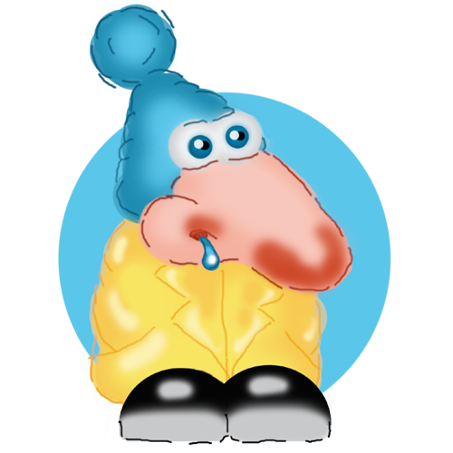

Важливо знати!
Кашлюковський частіше за все приходить не один, а разом з друзями:

Горлодер
З`являється в самий не потрібний момент. Мовчазний, шкідливий та дратує оточуючих. Любить холодні напої та морозиво. Характер прихований, не одружений.

як позбутись
Шмигоніс
У дитинстві був хорошим хлопчиком. Однак потрапив під вплив поганої компанії, почав гуляти взимку без шапки, сидіти під кондиціонерами і думає, що нежить сама пройде. Характер відсутній, нежонатий.